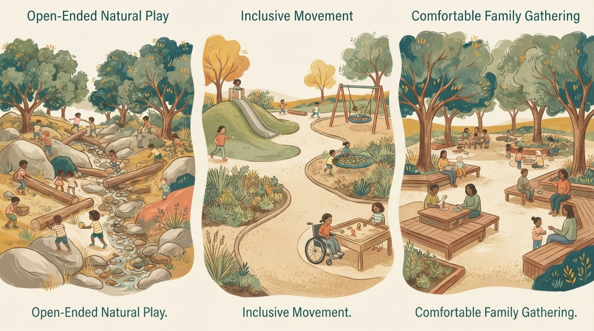
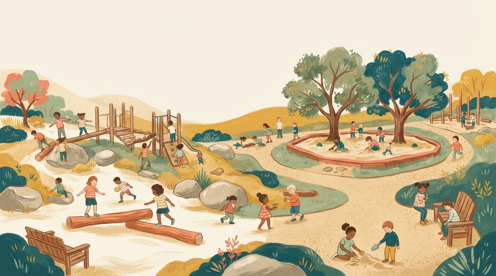
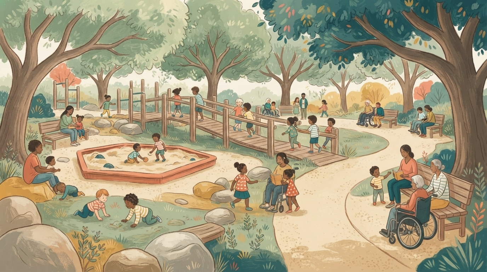
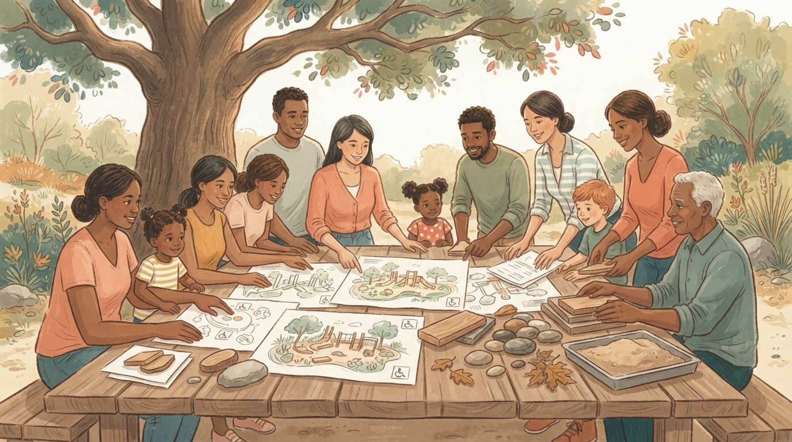
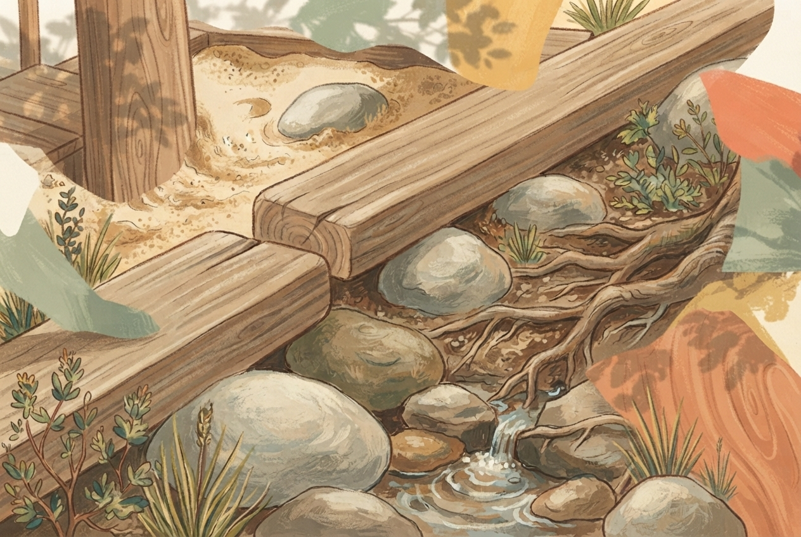
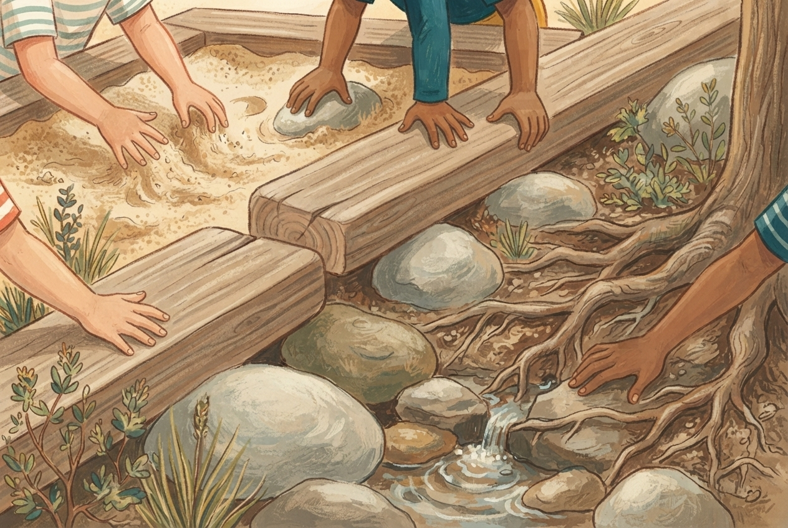

Nature that invites play
Wood, boulders, sand, water, texture, and room for imaginative play—not just equipment.
Orinda families for better play
This positive petition asks the City to work with residents on a stronger, community-informed alternative before choosing either current design.
Names, ZIP codes, and optional addresses stay private. Only the aggregate count and manually approved comments are public.
Why this matters
Orinda has shared two current playground options with residents. As presented, both rely on rubber surfacing, plastic equipment, faux-wood finishes, and fencing—and neither includes a sandbox.
That approach can feel predictable and limiting. Natural materials, uneven terrain, custom wooden climbing structures, sand and water play, and room for open-ended discovery give children more ways to explore, take appropriate risks, solve problems, and stay engaged.
For Orinda, this is an opportunity to create a place that reflects the character of our community—not simply install a standardized package. Parents and families use these spaces regularly and can speak firsthand to what children need: shade, seating, clear sight lines, accessibility, durability, safety, and meaningful play for different ages and abilities.
The goal is not simply a newer playground. It is a better place for children to play, families to gather, and community to form.
Visual ideas
These Gemini-generated concept drawings illustrate the kinds of ideas the community could explore together: natural materials, inclusive movement, sand and water play, shade, seating, and room to wonder.






These images are visual prompts for community conversation, not renderings, commitments, or representations of an approved Orinda design.
Community voices
Neighbors can leave an optional comment. We review comments before they appear here, and names are shown only when the writer explicitly agrees.
The ask
Orinda can do more than choose between two plans. This petition asks for a thoughtful third path shaped with the people who will actually use the space.
Wood, boulders, sand, water, texture, and room for imaginative play—not just equipment.
Meaningful play for toddlers, bigger kids, caregivers, and children with different abilities.
Shade, seating, clear sight lines, durable materials, and a setting that respects Orinda’s character.
A useful reference
The Outpost at Presidio Tunnel Tops shows how a playground can feel like part of a landscape: rocky forms, big movement, and water play that gives kids something to discover.
 Rock + movementChildren playing on Bluff Slide at Outpost · photo via Golden Gate National Parks Conservancy ↗
Rock + movementChildren playing on Bluff Slide at Outpost · photo via Golden Gate National Parks Conservancy ↗
 Water to discoverWater feature at Outpost playscape · Rachel Styer / Presidio Trust ↗
Water to discoverWater feature at Outpost playscape · Rachel Styer / Presidio Trust ↗
Photos are hosted by the original publisher and link back to its article. They are inspiration, not a claim that Orinda should copy another city’s playground.
Add your voice
Add your name and ZIP code to show support for a stronger alternative. A street address is optional and stays in the private response sheet. Comments are optional, reviewed first, and anonymous unless you explicitly choose to share your name.
Sign the petitionNo Google account required · no public list of names
Made by neighbors who believe public spaces should leave room for joy, shade, and a little dirt under the fingernails.